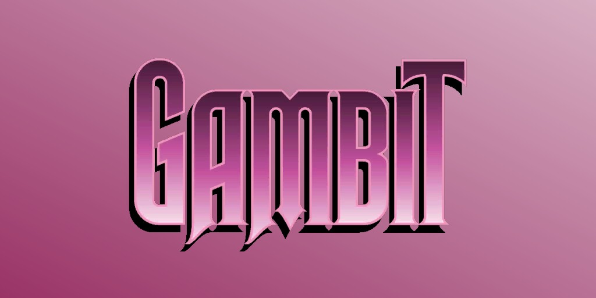
Gambit (Remy LeBeau) (Terre-616)
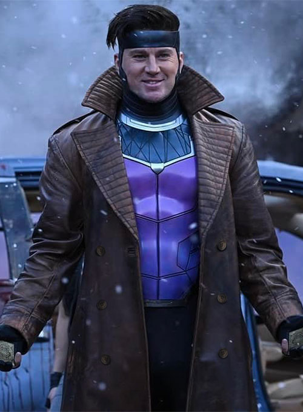
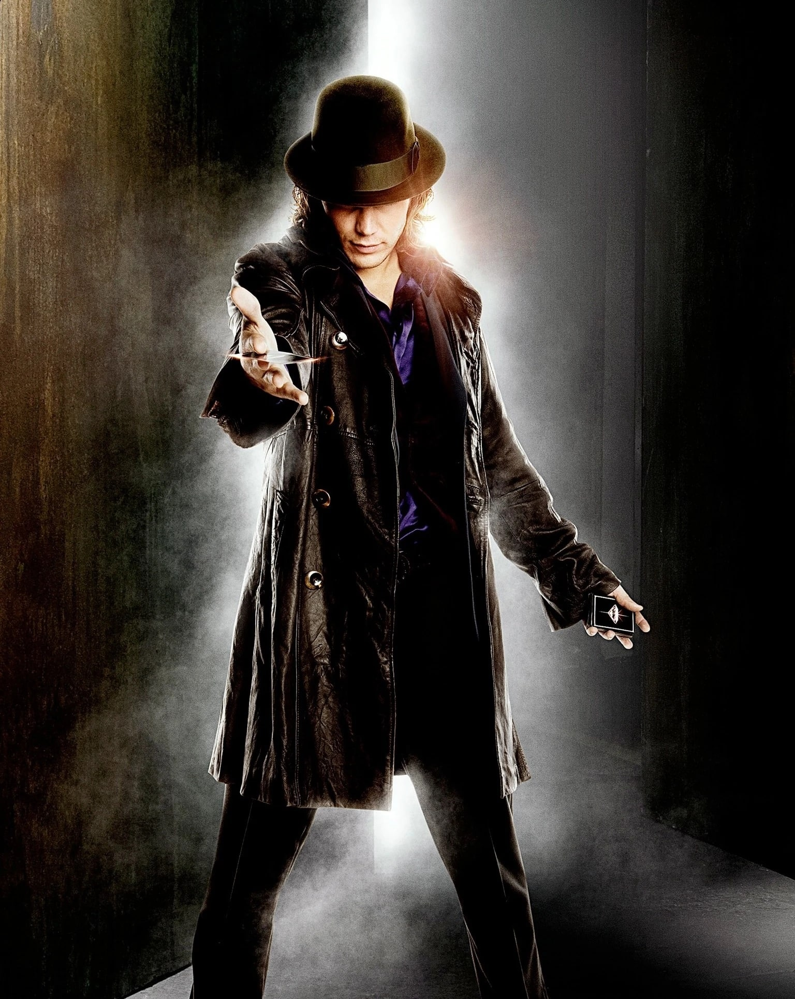
Origines :
Remy LeBeau est né à la Nouvelle-Orléans, en Louisiane.
Il est enlevé de l'hôpital où il est né, et remis à l'Antiquaire en cadeau.
L'enfant est qualifié comme le « Diable blanc », croyant qu'il a été prophétisé pour unir les guildes des voleurs et des assassins de la Nouvelle-Orléans, alors en guerre.
Peu de temps après, l'enfant est confié aux soins de Fagan's Mob, une bande de voleurs de rue qui l'élèvent et lui apprennent les voies du vol à la tire.
Après avoir vécu comme un orphelin dans la rue, à 10 ans, Remy tente de faire les poches de Jean-Luc LeBeau, alors patriarche de la Guilde des voleurs.
Jean-Luc sortira le garçon de la rue et l'adoptera dans sa propre famille.
Les capacités mutantes de Remy se manifestent au début de son adolescence, mais il décidera de garder ses pouvoirs secrets face à sa famille et ses amis, les exerçant en cachette.
Plus tard au cours de son adolescence, il est embauché par Mister Sinistre, qui voulait récupérer ses journaux volés du programme Weapon X.
Remy et la Guilde des voleurs acceptent la mission et envoient Rémy récupérer les journaux.
Alors qu'il attendait debout dans le froid canadien, surveillant les installations de l'organisation Weapon X, Rémy ne supporta pas le froid et jura qu'il volerait une longue veste élégante à la Nouvelle-Orléans après sa mission, ce qu'il fit.
En entrant dans l'installation, Remy voit le mutant Wolverine s'échapper de son expérimentation sur l'adamantium, et trouve les journaux intimes.
Il épousera Bella Donna Boudreaux, la fille du leader de la guilde ennemie, la Guilde des assassins.
Ce mariage, censé instaurer la paix entre les clans, occasionne une trêve de courte durée : Julien, le frère de Bella Donna, est mortellement blessé par Remy au cours d'un duel.
Afin d'éviter une guerre ouverte entre les guildes, Remy est chassé de la Nouvelle-Orléans.
Il passe les années suivantes à voyager à travers le monde et à peaufiner ses talents de voleur, aidé par ses pouvoirs mutants de charge bio-cinétique.
De passage au Caire, il rencontre la mutante Tornade qui tentait de fuir le Roi d'Ombre et survit en tant que pickpocket.
Avec l'aide de LeBeau, Ororo réussit à échapper à l'emprise maléfique du Roi d'Ombre.
Il se voit alors offrir la chance d'intégrer l'équipe des X-Men, et adoptera comme nom de code Gambit.
Dès ses premiers instants au sein de l'équipe, Gambit est attiré par la mutante Malicia, mais ce flirt se transforme rapidement en amour platonique, du fait des pouvoirs particuliers de la jeune mutante.
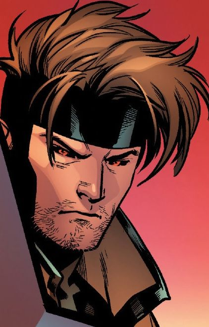
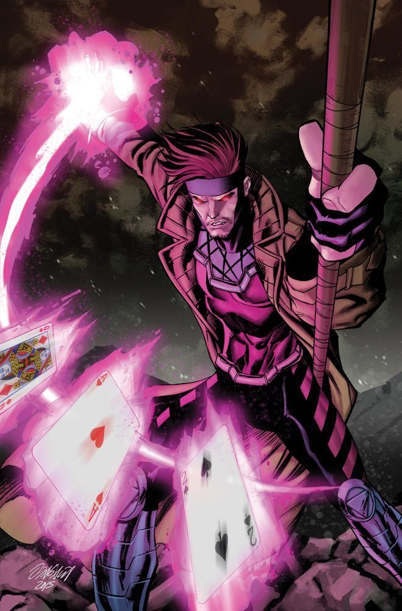
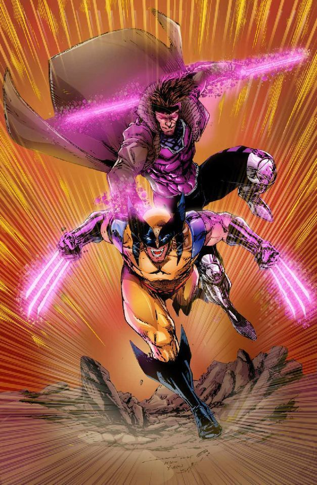

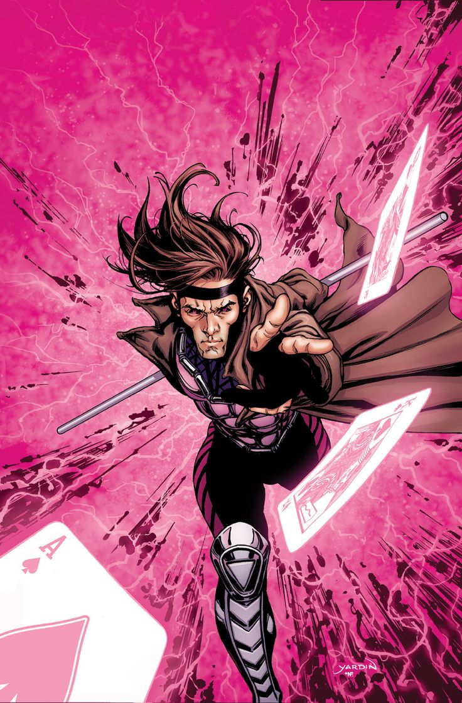
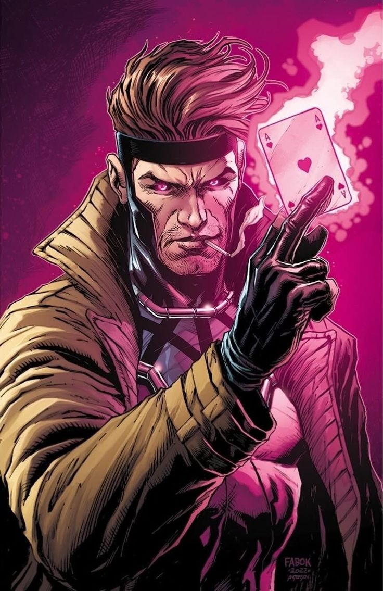
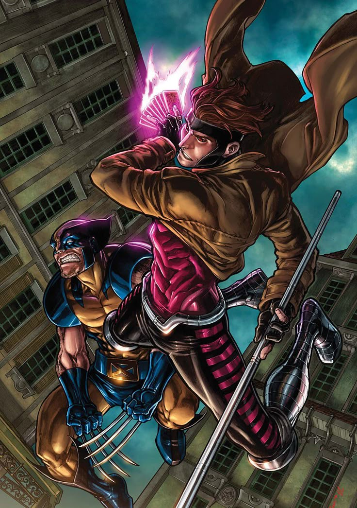
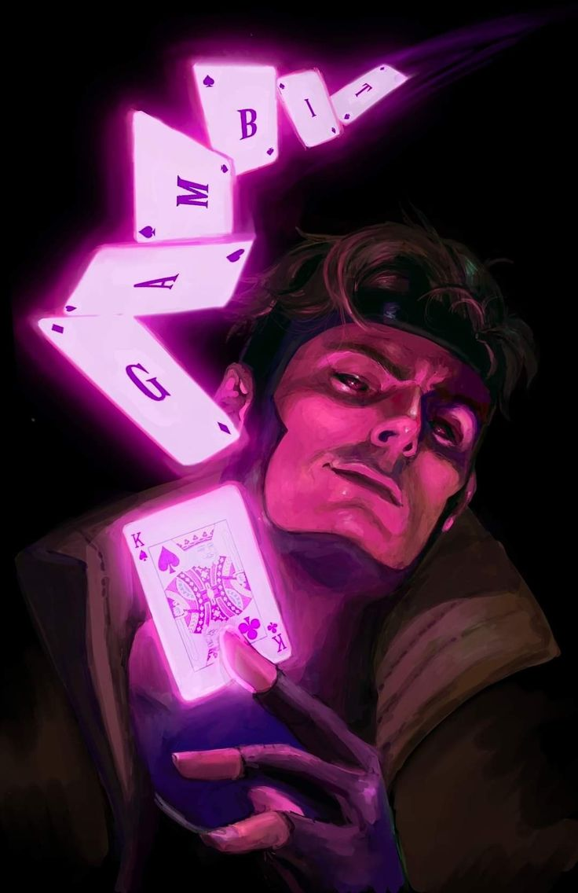
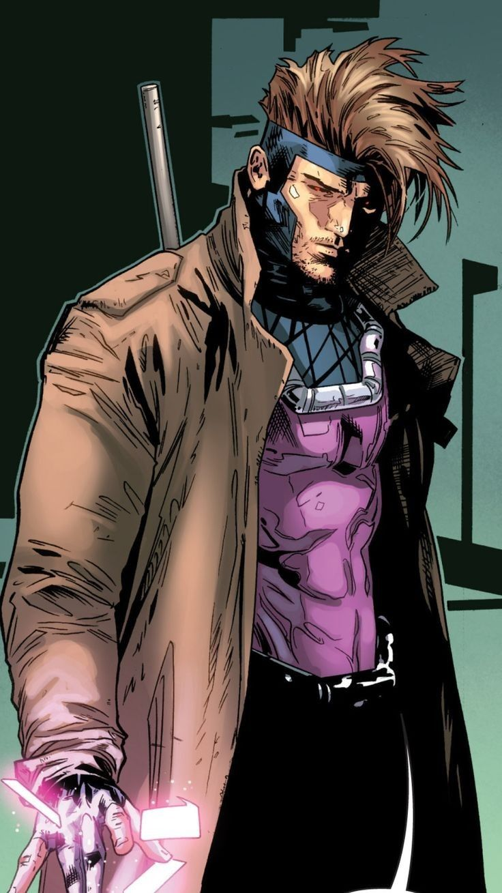
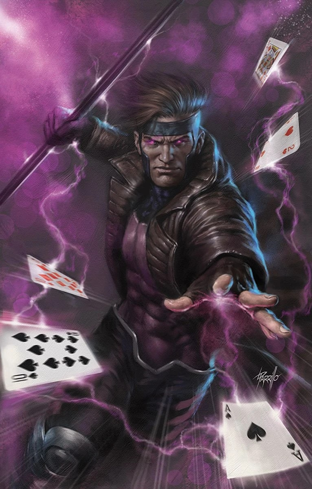
Personnalité :
Gambit est un personnage très charmeur, avec un sens de l'humour prononcé et une grande répartie.
Il est mystérieux, gardant un grand nombre de secrets pour lui, et a donc du mal à attirer la confiance.
Malgré son passé criminel, Gambit est profondément loyal envers sa « famille », les X-Men, Tornade, mais surtout Malicia.
Il est très réfléchi, observateur et planificateur, préférant opter pour la diversion ou le bluff qu'une approche directe.
Capacités :
Gambit possède la capacité de faire emmagasiner aux objets qu'il touche de l'énergie cinétique, puisant dans l'énergie potentielle contenue par n'importe quel objet, les transformant en arme qui, une fois lancées, explosent violemment au contact de leur cible, mais il ne peut pas charger ainsi des êtres vivants, même si on l'a déjà vu charger les griffes en Adamantium de Wolverine.
Il utilise fréquemment des cartes à jouer, qui se chargent rapidement en énergie et qui sont très maniables.
Il utilise également un bâton télescopique, et il maîtrise les armes de jet avec une extrême adresse.
En plus de son pouvoir mutant, Gambit possède une agilité et une adresse surhumaines.

Costume :
Gambit porte toujours un long trench-coat brun, en cuir ou en tissu épais, large et souple, flottant derrière lui comme une cape lorsqu'il se déplace, ainsi qu'un pantalon noir moulant.
Sous son manteau, Gambit porte un justaucorps noir avec un plastron violet métallique couvrant son torse et ses hanches.
Il porte également des gants noirs ouverts sur les doigts, pour qu'il puisse manipuler et charger ses objets avec précision.
Il porte également une cagoule noire encadrant son visage et couvrant son crâne et ses oreilles, laissant son visage complètement dégagé.
Ses yeux sont rouges avec des pupilles noires.
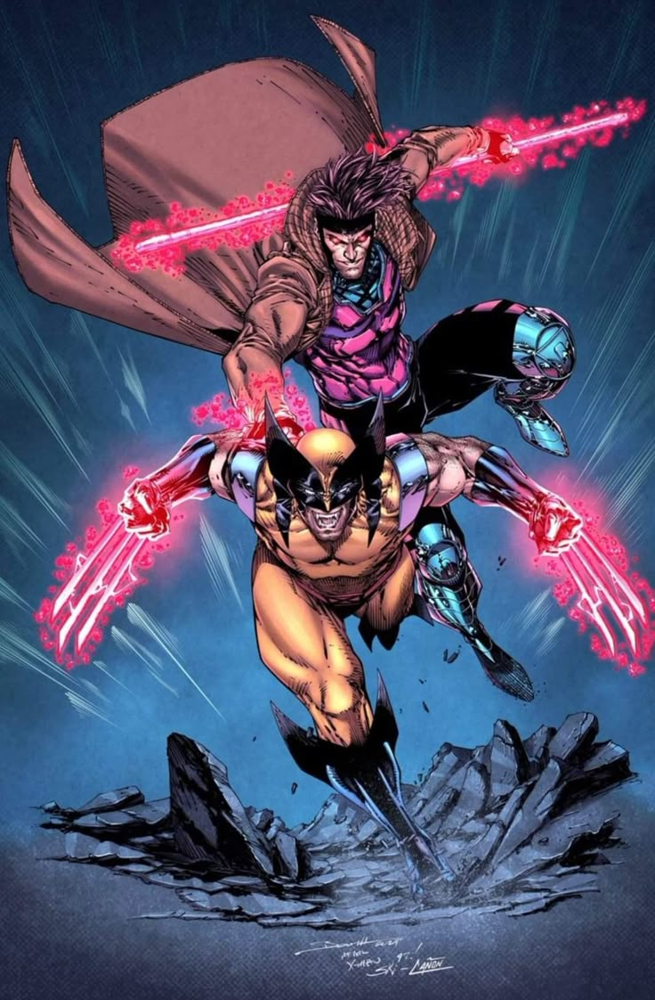
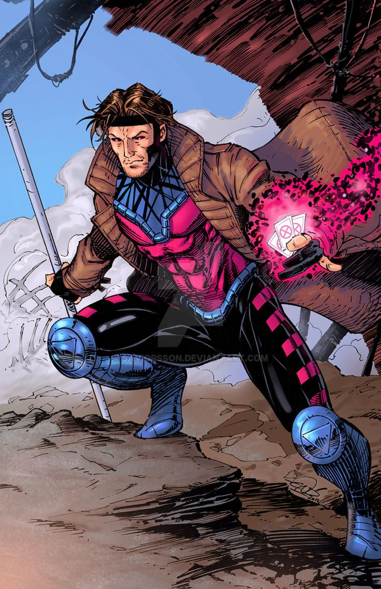
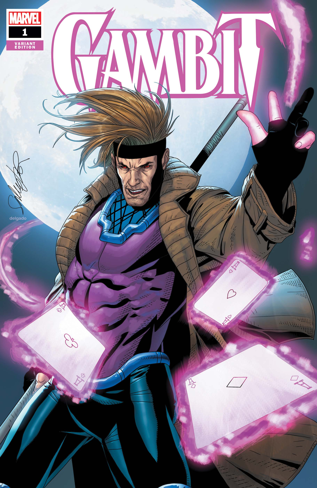
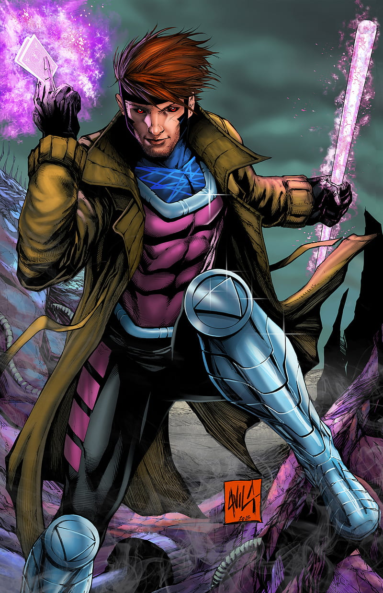
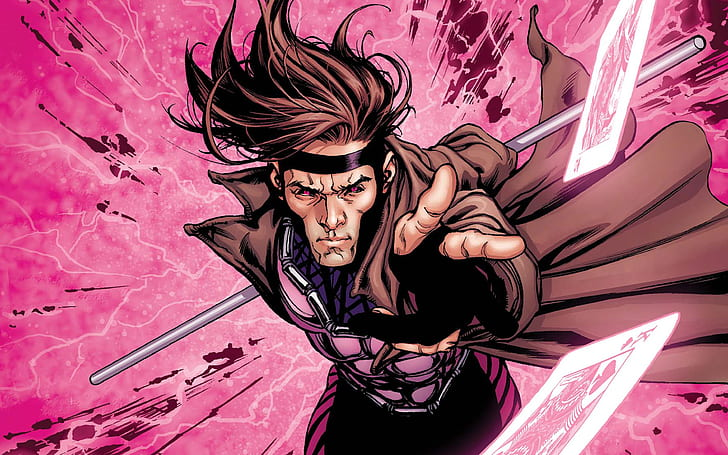
Les principaux ennemis de Gambit


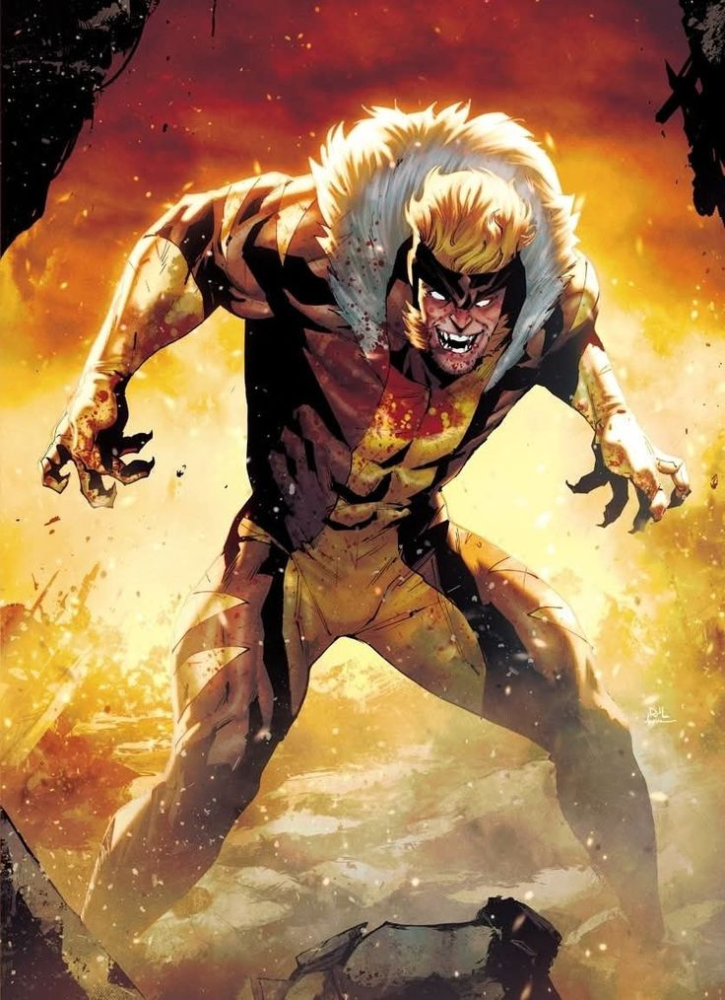


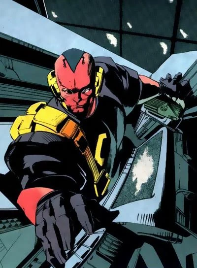
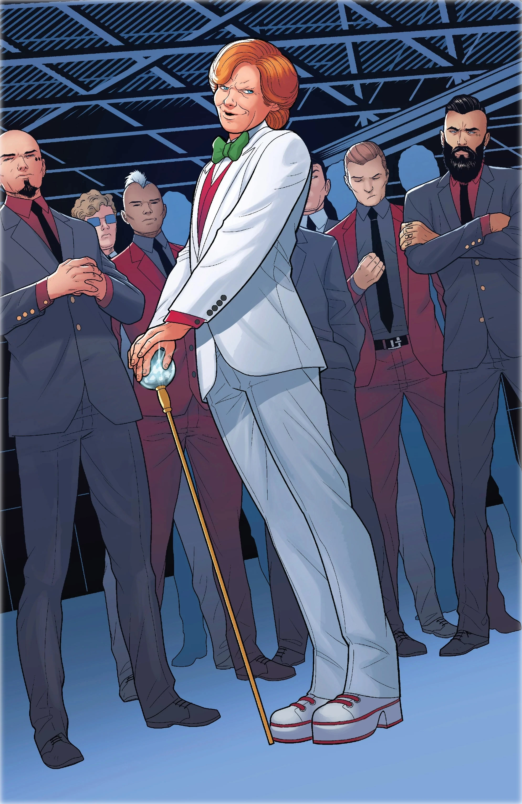
Équipes affiliées